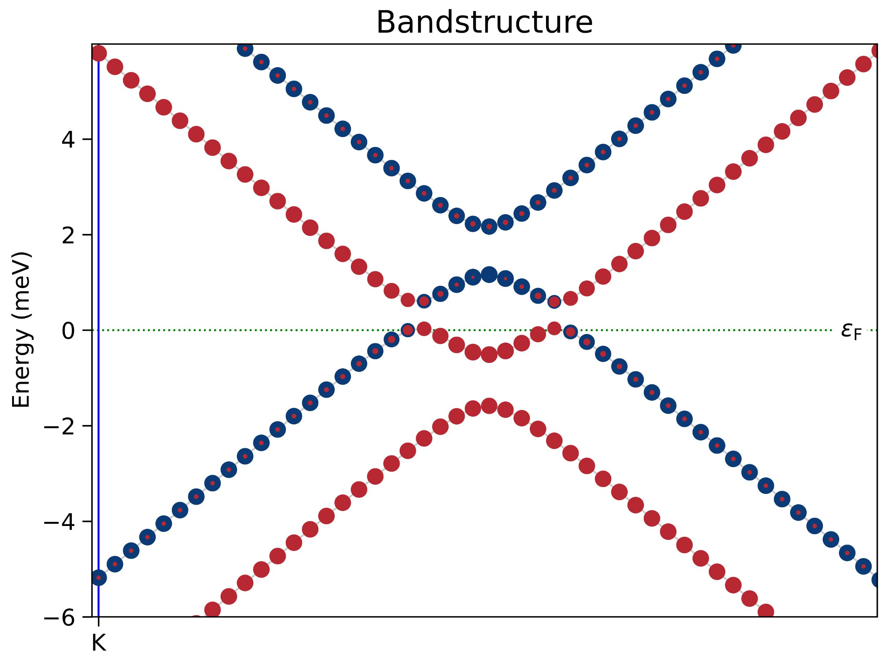

Ph.D. in Physics
University of Maine
Expected December 2027
Physics Ph.D. Candidate
University of Maine
2D Quantum Materials
Orono, Maine, USA
Let’s connectI am a Physics Ph.D. candidate at the University of Maine, working with Dr. Dinh Loc Duong. My research explores how neighboring materials can change graphene’s electronic properties, with the goal of enabling lower-power electronics. I use first-principles calculations to study spin–orbit coupling, magnetism, and proximity effects in two-dimensional materials. My background spans semiconductor alloys, energy-storage materials, and university teaching. Outside the lab, I enjoy badminton, swimming, and table tennis.
Download CVUniversity of Maine
Expected December 2027University of Engineering and Technology, Lahore
2017–2019University of Education, Lahore
2013–2017From atomic interfaces
to electronic behavior.

The question: can a neighboring layer give graphene the properties needed for lower-power electronics?
My approach: calculate the electronic bands of graphene/WSe₂ with QuantumATK, then investigate V doping.
Preliminary result: my proposal reports a small spin–orbit gap below 5 meV near K in the graphene/WSe₂ calculation.
Next: add magnetism and test the topology. Dissipationless current through the quantum anomalous Hall effect remains the goal.
A closer look
An illustrative model of the layers—not a calculated structure.
2D / 3D EXPLORER
Drag the model to rotate it. Switch to a top view or move the layers apart.
Educational geometry; arbitrary scale. This model is not a relaxed DFT structure or a calculated result.

What I compare: pristine graphene and graphene on WSe₂, focusing on the bands near the Fermi level.
What it tells me: how the interface changes the gap and spin–orbit behavior near K. Topology checks are the next stage.

The question: how does adding Ga or In change AlSb? We used DFT to compare its structure, electronic bands, and optical response.
Key finding: the calculated alloy compositions showed an indirect-to-direct band-gap transition, supporting their potential for optoelectronic applications.

Our approach: combine polyaniline, metal oxide, and graphene nanoplatelets to improve supercapacitor electrodes.
Key finding: the hybrid materials showed higher capacitance than the MnO₂ comparison, demonstrating the value of combining conductive and electroactive components.
Explore the original PowerPoint presentation.
Advance through the slides at your own pace.
Sensors, circuits, and practical problem solving.

I built a low-cost system to locate nearby objects by combining an ultrasonic sensor, servo motor, and Arduino UNO. Processing displays the object’s angle and distance.
Test result: 8 cm versus 8.6 cm, and 23 cm versus 24.2 cm measured by a ruler—about 6% mean absolute percentage error across these two checks.

What I built: gate-based circuits for adders, subtractors, and flip-flops, using breadboard wiring and LEDs.
The project page brings together my circuit photo, original full-subtractor diagrams, and an interactive full-adder demonstration.
Research, teaching,
and hands-on learning.
First-principles modeling of phase-change materials with VASP, followed by graphene-interface research with QuantumATK and OpenMX.
Train students to use PASCO Capstone for laboratory data collection, graphing, and analysis.
Taught classical mechanics, digital electronics, and experimental physics; supported student research.
Taught physics and helped students connect theory with practical laboratory work.
RECOMMENDATIONS & RECOGNITION
Perspectives from my research supervisor, independent researchers who cited my work, and my doctoral department.
RESEARCH SUPERVISOR · AUGUST 2025
Dr. Yu endorsed the quality, rigor, and relevance of my VASP simulations on HPC systems during my summer 2023 research assistantship. The work supported his NSF-funded project on kinetically driven solid–solid phase transitions for energy and electronic applications.
Dr. Liping Yu
Associate Professor, Materials Science and Engineering
University of Central Florida
INDEPENDENT CITING RESEARCHER · AUGUST 2025
Dr. Akhtar cited our Ga-doped AlSb study in his research on Cu-doped BaO nanoparticles. He described its findings as useful for interpreting dopant-induced structural and electronic changes. His assessment comes from independent citation, without a direct working relationship.
Dr. Majid Niaz Akhtar
Associate Professor, Institute of Physics
The Islamia University of Bahawalpur
INDEPENDENT CITING RESEARCHER · AUGUST 2025
Professor Rahman cited our hybrid supercapacitor-electrode research in his 2024 book chapter on conductive polymer nanocomposites. He highlighted it as a relevant example of hybrid electrode materials for energy storage. We have not worked together directly.
Prof. Dr. Md Mostafizur Rahman
Chemical Engineering and Polymer Science
Shahjalal University of Science and Technology
DOCTORAL STANDING CONFIRMATION · JULY 2025
Professors Hess and Thompson confirmed my doctoral enrollment, good standing, and progress as of July 31, 2025. Their letter documented my teaching and research appointments and the planned transition to research with Dr. Dinh Loc Duong in September 2025.
Prof. Samuel T. Hess & Prof. John R. Thompson
Graduate Coordinator & Department Chair
Physics and Astronomy, University of Maine
Paraphrased summaries, not verbatim quotations. Dates refer to the supplied letters.
I’m a physicist from Pakistan, now pursuing my Ph.D. at the University of Maine with Dr. Dinh Loc Duong. I’m interested in how calculations can guide better electronic materials.
My work spans semiconductor alloys, hybrid energy-storage materials, and graphene interfaces. Teaching keeps me close to the laboratory and to the challenge of explaining ideas clearly.
I enjoy badminton, swimming, billiards, foosball, and table tennis.
I’m looking for summer 2027 internships in semiconductor physics, computational materials, and research and development.
Download my CV3 journal articles.
1 related preprint.
Shafqat Nabi, Abdul Waheed Anwar, Muhammad Ahmad, et al.
Optical and Quantum Electronics · 55, 799 (2023)
Shafqat Nabi, Abdul Waheed Anwar, Zafar Wazir, Sardar Sikandar Hayat, Muhammad Ahmad, et al.
The European Physical Journal B · 95, 55 (2022)
Kashif Iqbal, Muhammad Ahmad Ishaq, et al.
Inorganic Chemistry Communications · 137, 109201 (2022)
Shafqat Nabi, Abdul Waheed Anwar, Muhammad Ahmad, Najam Ul Haq, Rana Waqas, Muhammad Tayyab, Muhammad Moin, Anwar Ali, Muhammad Afzal, Kashif Nabi
Research Square · Posted January 13, 2023 · Version 2
Open to summer 2027 internships